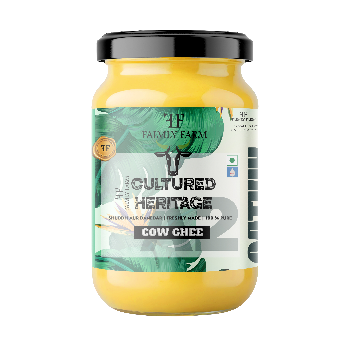
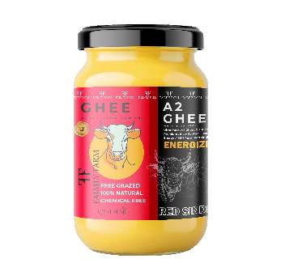

Featured story
Why native cow milk changes the aroma of bilona ghee
A closer look at sourcing, texture, and the small-batch process that shapes taste.
Read storyFrom the farm journal
A magazine-style blog listing inspired by the fitness editorial layout you shared, tuned for Faimly Farm stories, guides, and updates.
A closer look at sourcing, texture, and the small-batch process that shapes taste.
Read story
Build a pantry that keeps pace with everyday rotis, sweets, and festive meals.
Read more


